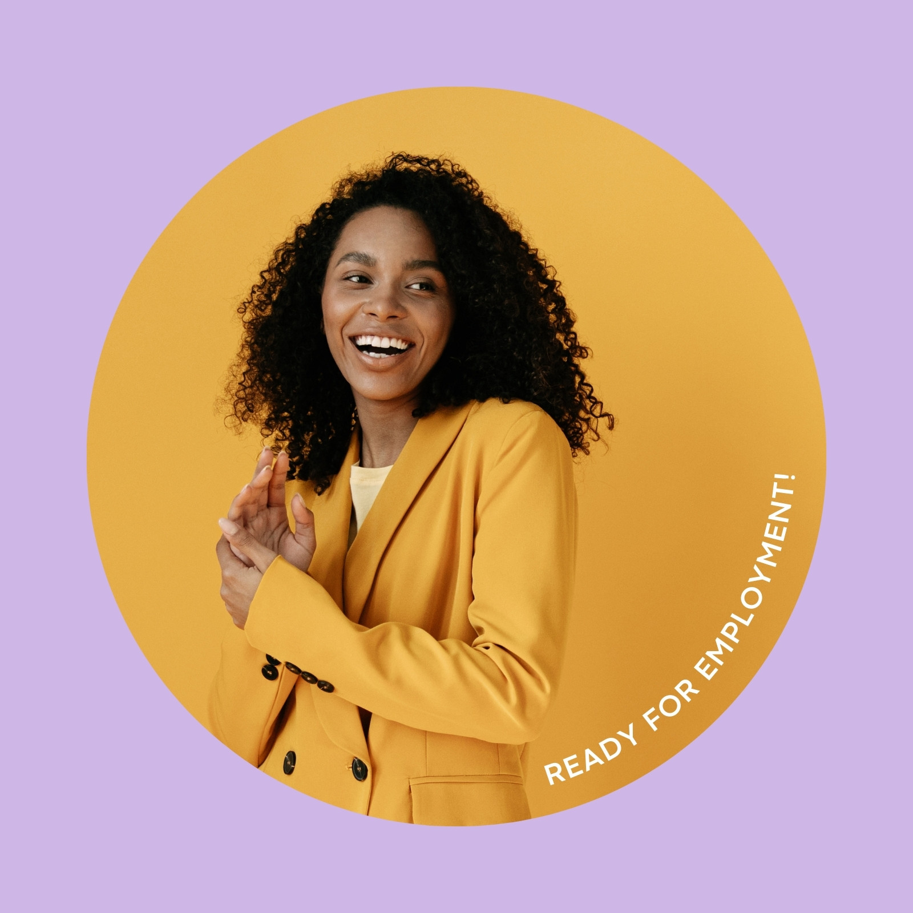

Caro G
Sales -Web - Dev
Projects
Clients
Contact
Courses for kids

Summary
My main objective is to develop the required software to achieve vending machines owned
by Dave Vending to communicate to office or via
app in a cellphone.
Education
I m an Advertising Professional looking forward to learn and grow
in Electric and Developer field for vending machine
business.
Universidad Regiomontana
2007-2010
Colegio Regiomontano Contry
2003-2006
Work experience
- Vending sales: Work for vending machine manifacturer selling special equipment for industrial and education segment
- Graphic Designer: As community manager and dev of Dave Vending e-commerce, I m in charge of posts and corporative messages
by social media
- Developer: As Dev manager in Dave Vending I lead the strategy to work in communication system.
Skills
- Fast learning
- Strategy and dev
- Commited to work